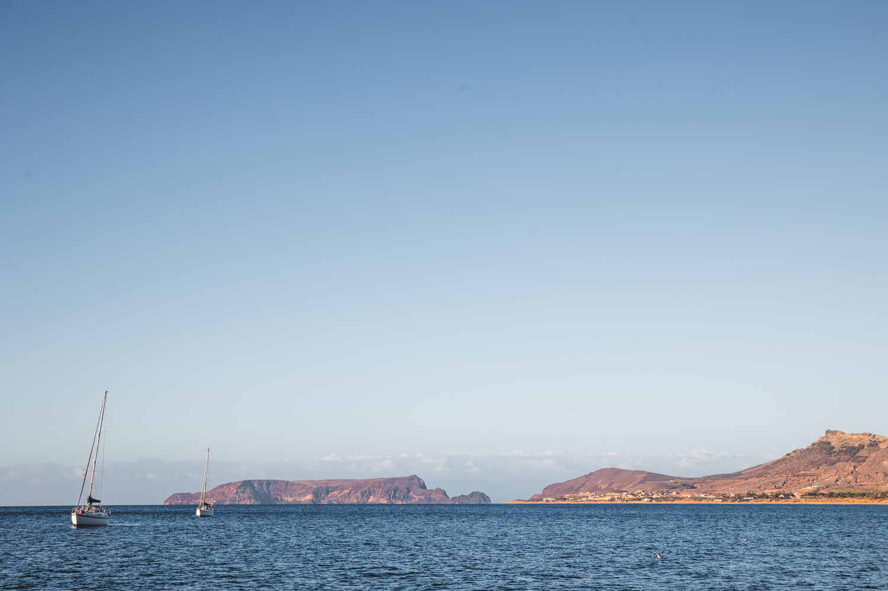
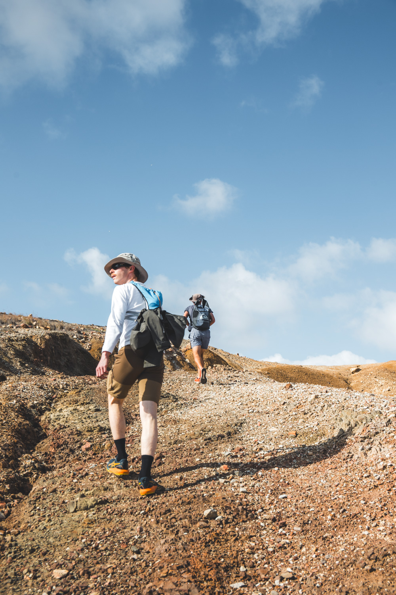
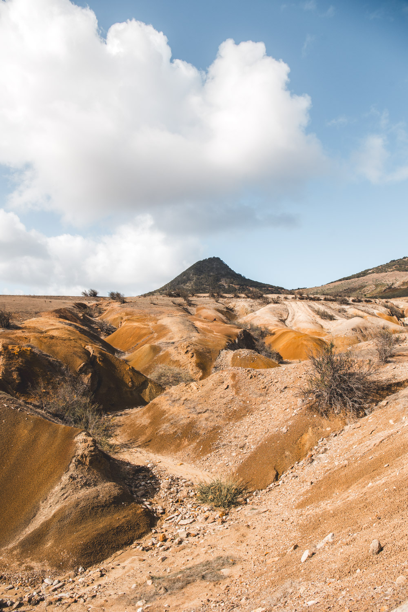
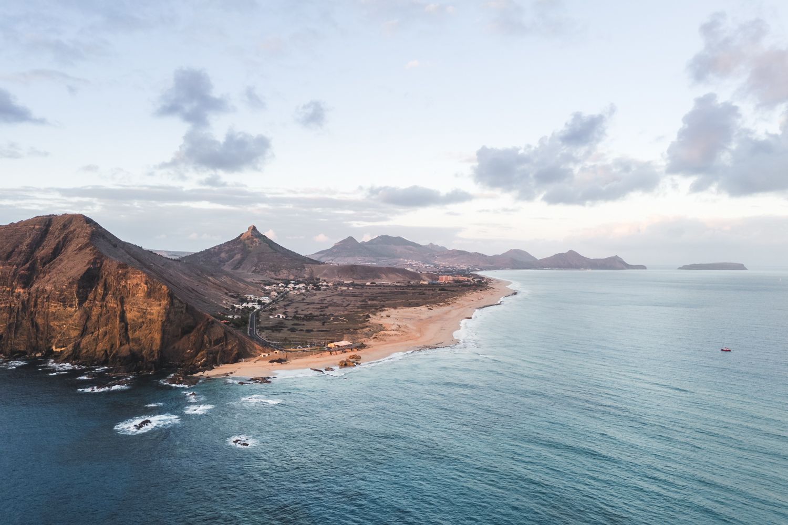
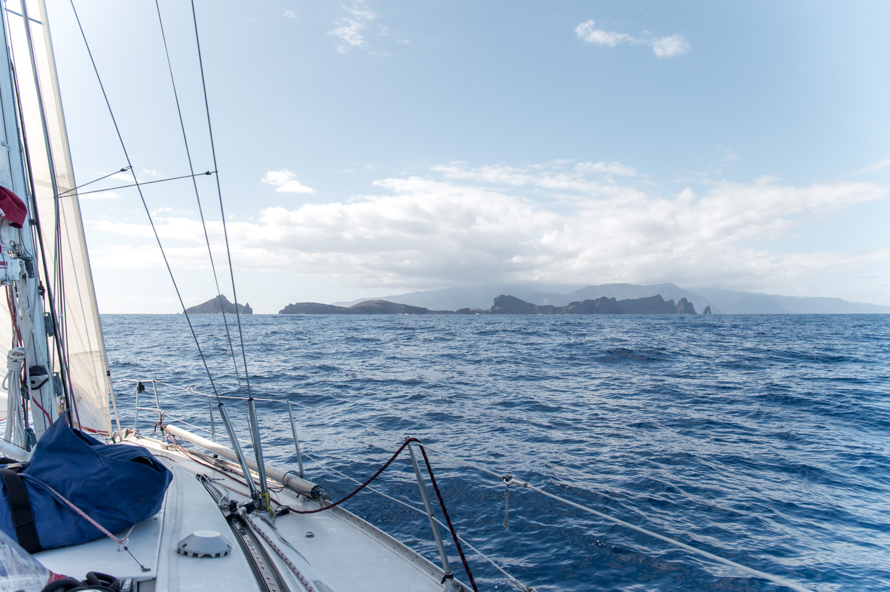
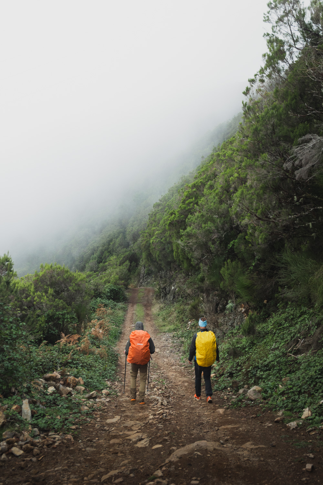
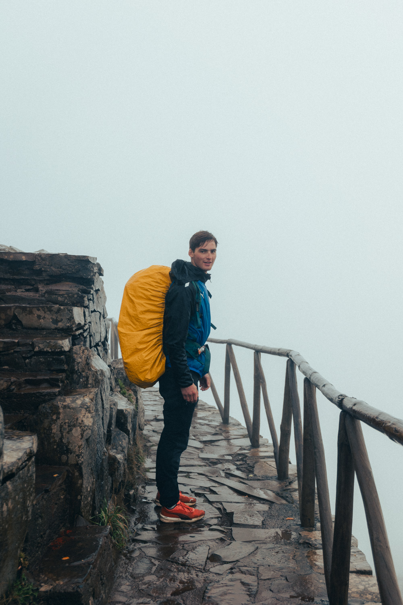

Des amis brestois nous avaient conseillé cette île de 10 km par 15 et vanté ses eaux bleues. Nous n’avons pas été déçus. Le lendemain de notre arrivée, nous sommes impressionnés de voir le fond malgré les 10 mètres affichés par le sondeur. Arrivée dans un nouveau pays oblige, nous faisons les démarches administratives avant de nous rendre en ville avec Loann. Clément profite du vent pour partir faire de la wing avec un autre équipage. Nous découvrons une île extrêmement aride sur laquelle nous ne croisons presque personne. Un aller-retour jusqu’à une formation basaltique nous suffit à prendre la température de l’île. Celle-ci va justement vite redescendre quand nous manquons de nous renverser avec l’annexe en tentant de repartir de la plage où nous l’avions laissée. Sans lampe frontale, nous ne voyons le rouleau déferler qu’au dernier moment. Nous vidons l’annexe et attendons une accalmie pour rentrer, honteux de notre bêtise, au bateau.

Le lendemain, c’est jour de tournage. Nous enregistrons les interviews qui manquent à Clément pour tirer un fil rouge dans la vidéo des travaux. L’après-midi, nous partons en promenade sur l’île. Objectif : atteindre le plus haut point possible. Nous commençons notre ascension depuis le port et traversons un vallon rayé d'une conduite en béton. Elle contraste avec le sable ocre voir rouge sur lequel nous marchons. Ce n’est pas la première fois que nous observons des infrastructures importantes pour évacuer l’eau. Le parcours passe par un champ de cactus à flanc de colline, qui offre une tâche de vert dans les paysages minéraux. Nous parvenons ensuite à un point de vue permettant d’apprécier la côte sud de l’île. Une première curiosité anthropique s’offre à nous : une piste de karting est posée au pied de falaises magistrales, au bord de la plage. Nous continuons de grimper et atteignons finalement le sommet du mont Castelo. Nous avons une vue presque panoramique sur l’île, barrée par la piste de l’aéroport. Les nuages créent des jeux de lumière sur les sables oranges et le golf, vert, contraste avec l’aridité du reste de l’île. Nous restons un moment à observer la beauté et les bizarreries de Porto Santo avant de décider de redescendre sans atteindre le Pico Do Facho, le point culminant de l’île.


Le matin de notre troisième et dernier jour nous offre une mauvaise surprise. Les rafales de vent ont retourné l’annexe et le moteur est la tête dans l’eau. La vidange nous semblait nécessaire, nous commençons les réparations en changeant l’huile. Après quelques manipulations, ô surprise, le moteur démarre. Il tourne même mieux qu’avant ! Nous nous en félicitons et rejoignons la côte pour faire nos démarches de départ. En fin d’après-midi, nous quittons le mouillage près de la digue pour aller poser l’ancre à l’ouest de la plage, près de l’île de Cal. Nous restons sans voix devant la transparence de l’eau qui nous permet de voir l’intégralité de notre mouillage dont presque 40m sont déroulés. Il ne faut pas longtemps à Loann pour trouver un pont creusé dans un rocher. Clément le film passant dessous. Nous trouvons le mouillage trop rouleur et nous redirigeons vers l’ouest de la plage pour la nuit. Clément nous montre les photos qu’il a prises avec le drone : magiques !

Encore indécis sur notre port d’arrivée à Madère, nous mettons les voiles pour une traversée courte et calme. En-tout-cas suffisamment pour que nous puissions travailler à tour de rôle dans le bateau. Nous savons que Madère est réputée pour sa météo nuageuse et nous n’avons pas encore pu la voir à travers le brouillard qui l’encercle. Nous contournons la pointe est et découvrons une première curiosité : l’aéroport sur pilotis. La piste a été rallongée au-dessus du vide faute de place.

Notre attention est vite redirigée vers un bateau à moteur sur notre route. Nous ne pouvons le contourner par l’arrière car nous sommes déjà trop proches du vent et hors de question de passer sous son vent : un banc de globicéphales tourne devant le zodiac. Nous réduisons la voilure et faisons des petits tours à l’écart pour les observer aussi. La rencontre s’arrête là car il est interdit de s’approcher des cétacés (encore moins de nager avec) à Madère. Les règles sont strictes et les amendes salées. Nous mettons cap sur Funchal, la capitale, au sud de l’île. Nous longeons des falaises sur lesquelles sont accrochées des maisons. Le ton est donné : Madère est une île fortement vallonnée. Nous mouillons devant le port, mettons l’annexe à l’eau et partons découvrir la ville. Nous déambulons dans le centre-ville avant de commander des Bolo Do Caco. Ce sont des pains à l’ail typiques et ici garnis.
Le lendemain, nous rédigeons quelques mails, notamment pour échanger avec les chercheurs de l’ENSTA Bretagne. L’après-midi est quant à lui consacré à préparer notre trek. Les informations sur les bus sont difficiles à trouver et nous voulons connaître les interdits en termes de camping sauvage sur l’île. Nous faisons donc un tour à l’office du tourisme. Ces informations nous permettent de compléter le roadbook rédigé dans l’après-midi.
Notre trek dura cinq jours. L’occasion pour nous de découvrir cette pratique en parcourant l’île d’est en ouest. Le récit détaillé de cette aventure est disponible dans un article à part sur notre blog.


Nos deux derniers jours à Madère nous permettront d’à la fois nous reposer, mais aussi de rincer notre matériel de randonnée. Quelques arrêts dans des boutiques pour acheter des pasteis de nata, des pâtisseries à la crème typiquement portugaise, rythmeront notre préparation pour la navigation vers les Canaries.